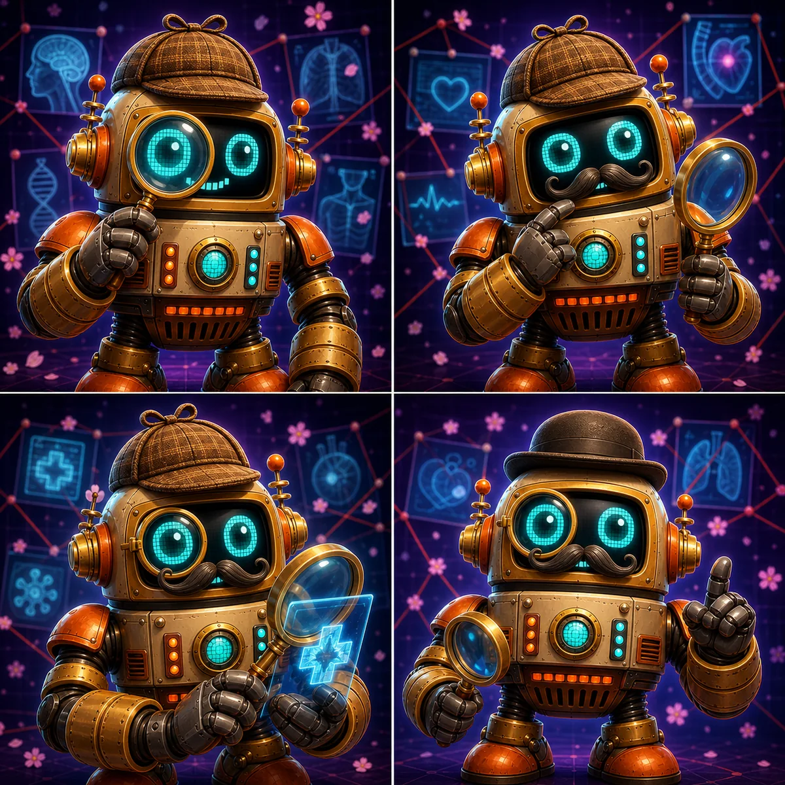
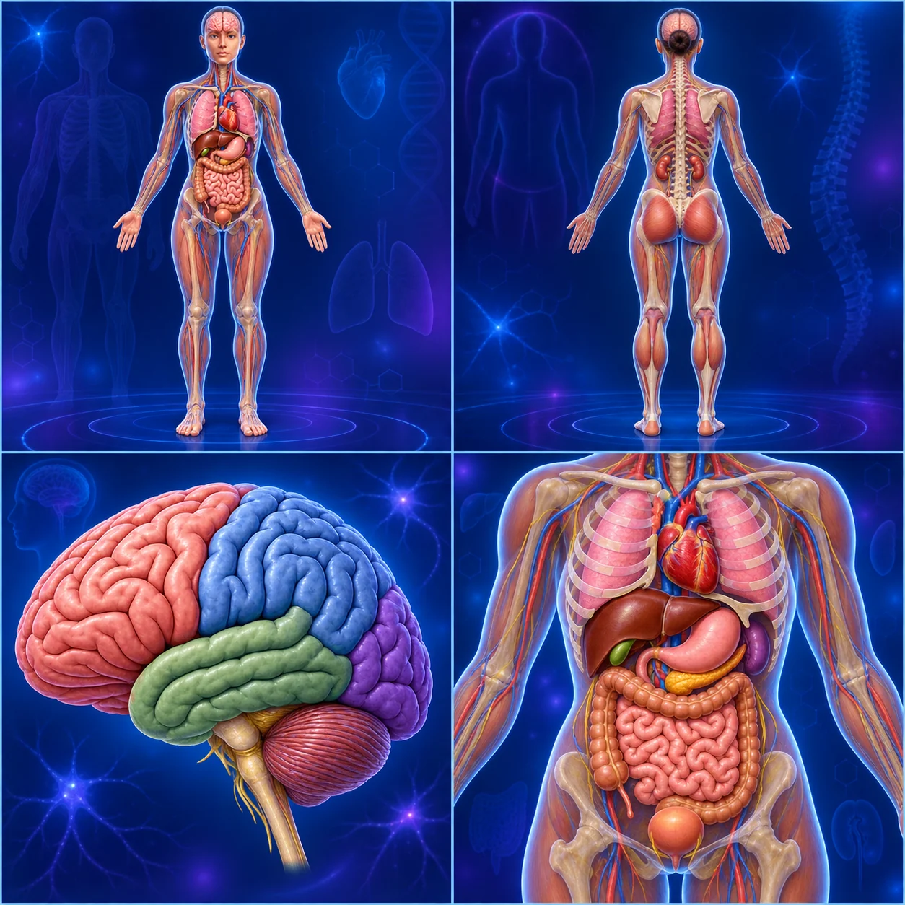
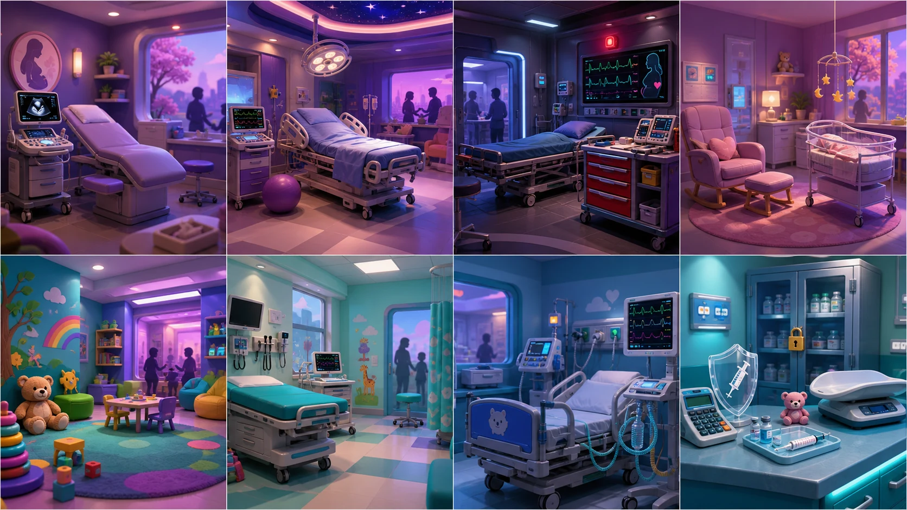

🎮 Learning Games
Review that does not feel like review. Each game opens in its own tab and has a button to come back here.
4 games · 7 play modes
Pick a game, pick a course, pick your modules, and play. Awesom-o 2000 explains every answer you miss. The illustrated edition adds detective Awesom-os, clinical rooms, teaching visuals, achievements, sound and motion controls—and animated Awesom-o celebrations for your milestones.
- 🏆 Jeopardy
- 🔒 Escape room
- 🔎 Clue mystery
- 🧠 Memory match
- 4,030 questions
- Clickable answers
- Animated celebrations
- Read aloud
- Three difficulty levels

Click directly on the body to find organs, pulse sites, referred pain, brain regions, assessment landmarks, injection locations, pressure-risk areas and more. Every miss opens an Awesom-o teaching moment.
- Clickable anatomy
- Organ locations
- Pulse points
- Referred pain
- Brain mapping
- Assessment landmarks
- Safety procedures
- Animated celebrations

Enter separate NUR 234 and NUR 235 wings for prenatal risk, labor, animated fetal-monitor tracing, postpartum and newborn rounds, development, pediatric triage, respiratory and cardiac rescue, medication safety, and a clickable childproof-room challenge.
- 180 course questions
- Clickable answers
- Animated fetal tracings
- 12 safety hotspots
- Teaching after every miss
- Awesom-o role art
- Sound & read aloud
- Yeehaw celebrations

The aliens will release our robot buddy after a human proves Earth nursing is ready for the galaxy. Restore five ship systems with safe clinical decisions, rationales, hints, read-aloud support, and funny robot celebrations.
- 4,030 questions
- All course packs
- Single answer & SATA
- 10, 20, or 30 questions
- Alien scanner hints
- Broly-style safety coach
- Cowboy & pirate dances
- Crab-walk achievements
More are coming. When you finish another one, drop it in Drive › Games and it goes on this shelf.